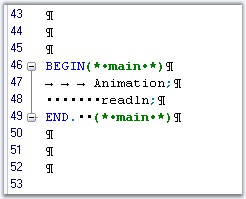

Edit Control has the ability to indicate whitespaces in its contents with default indicators, explained as follows.
1. Single Spaces are indicated by using Dots.
2. Tabs are indicated by using Right Arrows.
3. Line Feeds are indicated by using a special Line Feed Symbol.

Figure 21: Indicators for Single Spaces, Tabs and a Line Feed
You can enable whitespace indicators by setting the ShowWhiteSpaces property to True. By default, this property is set to False.
|
Edit Control Property |
Description |
|
ShowWhiteSpaces |
Gets / sets value indicating whether whitespaces should be shown as special symbols. |
You can also toggle the visibility of the whitespace indicators by using the ToggleShowingWhiteSpaces method, or by setting the ShowWhiteSpaces property to False.
|
Edit Control Method |
Description |
|
ToggleShowingWhiteSpaces |
Toggles showing of whitespaces. |
|
[C#]
// Enabling white space indicators. this.editControl1.ShowWhitespaces = true;
// Toggle the visibility of the white space indicators. this.editControl1.ToggleShowingWhiteSpaces(); |
|
[VB.NET]
' Enabling white space indicators. Me.editControl1.ShowWhitespaces = True
' Toggle the visibility of the white space indicators. Me.editControl1.ToggleShowingWhiteSpaces() |
Showing / Hiding Indicators
You can selectively show / hide the whitespace indicators by using the following subproperties of the WhiteSpaceIndicators property - ShowSpaces, ShowTabs and ShowNewLines.
|
Edit Control Property |
Description |
|
ShowSpaces |
Indicates whether spaces should be replaced with symbols. |
|
ShowTabs |
Indicates whether tabs should be replaced with symbols. |
|
ShowNewLines |
Indicates whether new lines should be replaced with symbols. |
|
[C#]
// Custom indicator for Line Feed. this.editControl1.WhiteSpaceIndicators.ShowSpaces = true;
// Custom indicator for Tab. this.editControl1.WhiteSpaceIndicators.ShowTabs = true;
// Custom indicator for Space Character. this.editControl1.WhiteSpaceIndicators.SpaceNewLines = true; |
|
[VB.NET]
' Custom indicator for Line Feed. Me.editControl1.WhiteSpaceIndicators.ShowSpaces = True
' Custom indicator for Tab. Me.editControl1.WhiteSpaceIndicators.ShowTabs = True
' Custom indicator for Space Character. Me.editControl1.WhiteSpaceIndicators.SpaceNewLines = True |
You can also set the indicators to indicate single spaces, tabs and line feeds by using the NewLineString, TabString and SpaceChar subproperties of the WhiteSpaceIndicators property, as shown below.
|
Edit Control Property |
Description |
|
NewLineString |
Gets / sets string that represents line feed in WhiteSpace mode. |
|
TabString |
Gets / sets string that represents Tab in WhiteSpace mode. |
|
SpaceChar |
Gets / sets character that represents line feed in WhiteSpace mode. |
|
[C#]
// Custom indicator for Line Feed. this.editControl1.WhiteSpaceIndicators.NewLineString = "LF";
// Custom indicator for Tab. this.editControl1.WhiteSpaceIndicators.TabString = "TAB";
// Custom indicator for Space Character. this.editControl1.WhiteSpaceIndicators.SpaceChar = "s"; |
|
[VB.NET]
' Custom indicator for Line Feed. Me.editControl1.WhiteSpaceIndicators.NewLineString = "LF"
' Custom indicator for Tab. Me.editControl1.WhiteSpaceIndicators.TabString = "TAB"
' Custom indicator for Space Character. Me.editControl1.WhiteSpaceIndicators.SpaceChar = "s" |
See Also